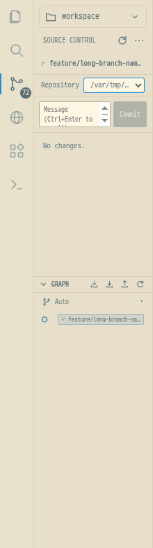
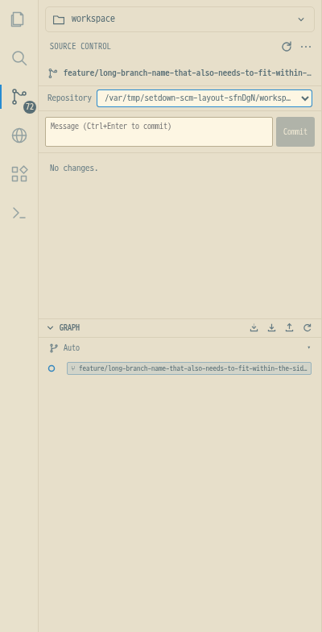

저장소 경로가 길어도 선택 상자가 사이드바 안에서 줄어들고 …로 표시된다. 전체 경로는 마우스를 올리거나 목록을 열어 확인할 수 있다. 220px와 400px에서 가로 넘침이 없고, 키보드 포커스와 저장소 전환이 정상 동작하는 것을 실제 Electron에서 검증했다.
배지는 VS Code 기본 집계 기준을 적용했다: 충돌 + 스테이징 + 작업 트리 변경 항목을 여러 저장소에 걸쳐 합산한다. 부분 스테이징 파일은 두 항목, 충돌은 한 항목으로 세며, 미추적 파일은 포함하고 무시된 파일은 제외한다. 0이면 배지를 숨긴다. 선택한 저장소가 깨끗해도 다른 저장소의 변경을 표시한다. Git 메타데이터만 바뀌어도 자동 갱신한다.
VS Code Repository.setCountBadge · 저장소 합산 로직


단위 654개, 도구 검사 11개, 빌드·타입 검사 통과. 전체 Electron 검사 210개 통과, 1개 실패. 실패: test/e2e/browser/zoom.spec.ts:6:1 › browser Ctrl+wheel zooms websites and frames independently of the app and documents . 전체 실행을 성공으로 보고하지 않는다.
배지의 72 → 73 → 72 갱신, 선택하지 않은 저장소의 메타데이터 변경, 최신 내용과 위치를 유지하는 편집 후 Esc도 통과했다. 모든 GUI 검사와 성능 측정은 Xvfb·별도 런타임 디렉터리·D-Bus에서 실행했다. 사용자 데스크톱에 테스트 창을 띄우지 않았다.
독립 설치한 기준본 860ec7e와 수정본을 같은 Xvfb에서 번갈아 3회씩 측정했다. 각 실행은 새 Electron 프로세스에서 5주기를 진행한다. 첫 번째·두 번째 주기는 개별 비교하고, 3–5번째 중앙값을 warm으로 비교한다. 모든 수치는 ms, 기존본 → 수정본 순서다. 편집 유무와 준비 시간 0/3000ms를 구분했다. Esc 수치는 최신 내용의 실제 네이티브 캡처까지이며 모니터 표시 시각이 아니다. 기존 허용치 25%와 50ms를 동시에 넘으면 회귀로 판정한다. 두 빌드는 SETDOWN_BUILD_SOURCEMAP=0을 사용했다.
| 문서 | 편집 | 준비 시간 | 측정 | 첫 번째 | 두 번째 | Warm |
|---|---|---|---|---|---|---|
| Markdown | 없음 | 0 ms | Esc → 최신 내용 캡처 | 31.0 → 38.0 | 23.0 → 21.0 | 25.0 → 25.0 |
| Markdown | 없음 | 0 ms | 더블클릭 → 편집 가능 | 36.0 → 18.0 | 23.0 → 34.0 | 12.0 → 12.0 |
| Markdown | 있음 | 0 ms | Esc → 최신 내용 캡처 | 456.0 → 401.0 | 106.0 → 91.0 | 93.0 → 88.0 |
| Markdown | 있음 | 0 ms | 더블클릭 → 편집 가능 | 23.0 → 21.0 | 14.0 → 15.0 | 15.0 → 13.0 |
| Markdown | 없음 | 3000 ms | Esc → 최신 내용 캡처 | 41.0 → 42.0 | 20.0 → 22.0 | 19.0 → 23.0 |
| Markdown | 없음 | 3000 ms | 더블클릭 → 편집 가능 | 17.0 → 17.0 | 11.0 → 12.0 | 11.0 → 11.0 |
| Markdown | 있음 | 3000 ms | Esc → 최신 내용 캡처 | 111.0 → 108.0 | 107.0 → 101.0 | 93.0 → 92.0 |
| Markdown | 있음 | 3000 ms | 더블클릭 → 편집 가능 | 20.0 → 16.0 | 14.0 → 13.0 | 13.0 → 12.0 |
| Git review | 없음 | 0 ms | Esc → 최신 내용 캡처 | 964.0 → 906.0 | 25.0 → 22.0 | 27.0 → 26.0 |
| Git review | 없음 | 0 ms | 더블클릭 → 편집 가능 | 29.0 → 23.0 | 12.0 → 11.0 | 13.0 → 13.0 |
| Git review | 있음 | 0 ms | Esc → 최신 내용 캡처 | 1009.0 → 926.0 | 1500.0 → 1497.0 | 189.0 → 186.0 |
| Git review | 있음 | 0 ms | 더블클릭 → 편집 가능 | 15.0 → 14.0 | 23.0 → 22.0 | 21.0 → 21.0 |
| Git review | 없음 | 3000 ms | Esc → 최신 내용 캡처 | 31.0 → 24.0 | 20.0 → 22.0 | 20.0 → 17.0 |
| Git review | 없음 | 3000 ms | 더블클릭 → 편집 가능 | 26.0 → 24.0 | 12.0 → 11.0 | 19.0 → 18.0 |
| Git review | 있음 | 3000 ms | Esc → 최신 내용 캡처 | 240.0 → 224.0 | 183.0 → 188.0 | 179.0 → 175.0 |
| Git review | 있음 | 3000 ms | 더블클릭 → 편집 가능 | 23.0 → 22.0 | 20.0 → 19.0 | 19.0 → 18.0 |